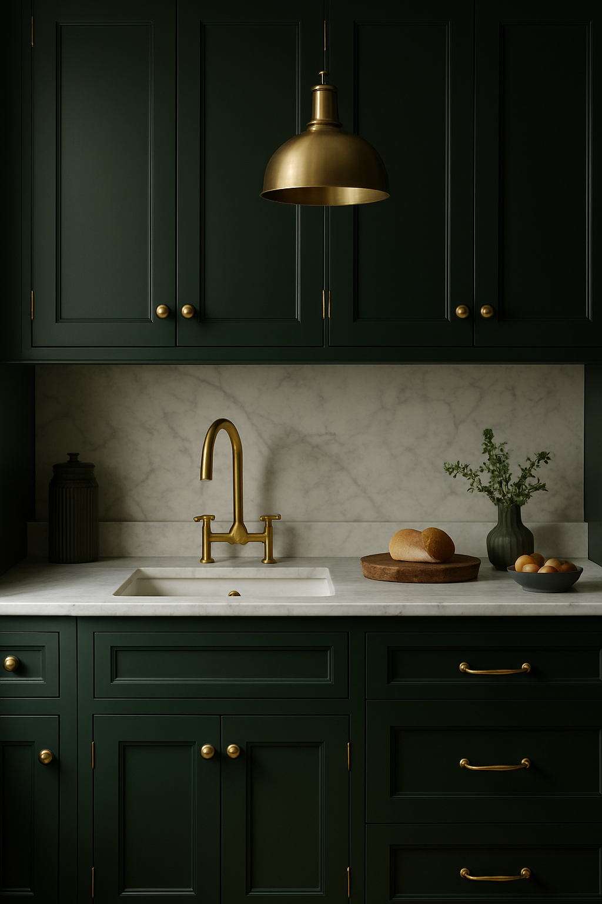
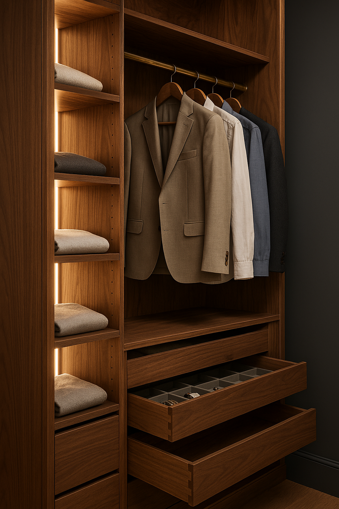
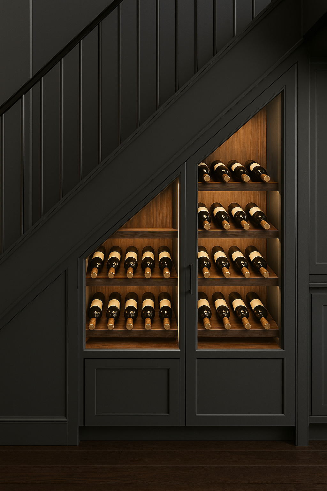
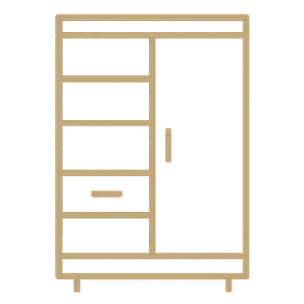
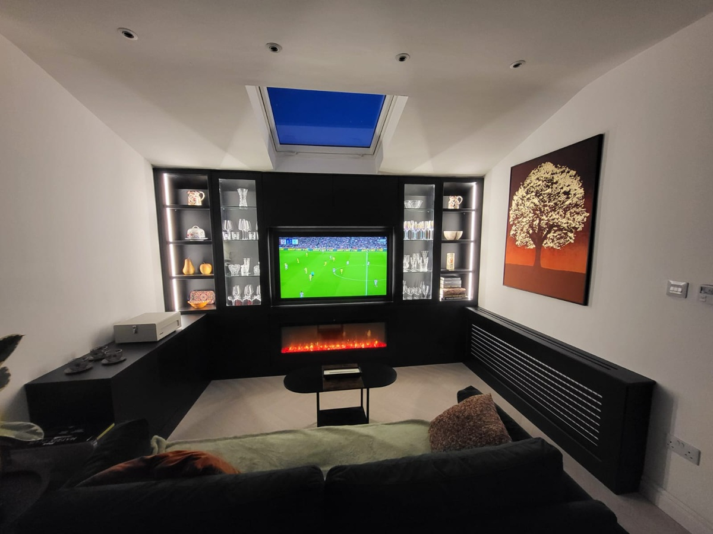
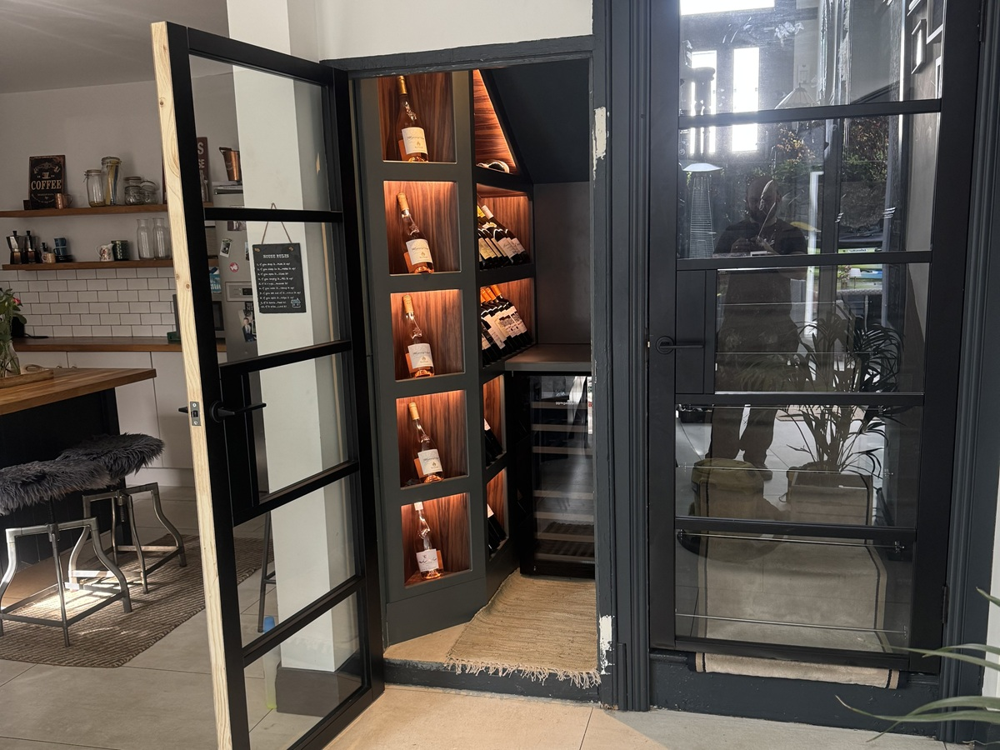
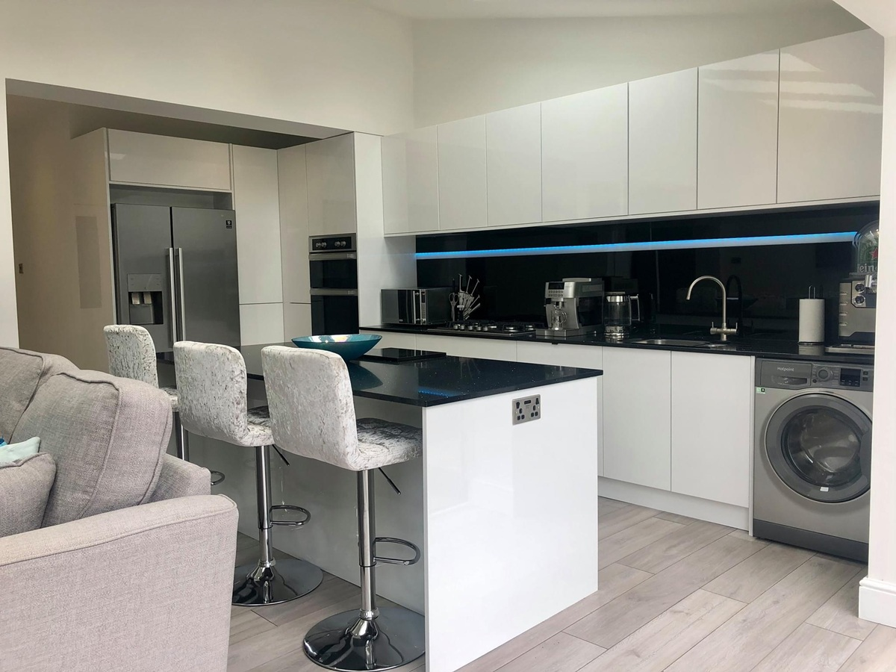
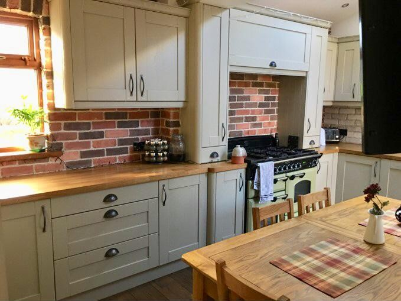

Design. Craft. Install.
From bespoke creations to precision installations, we shape spaces that blend timeless design with modern functionality.
Kitchens
From concept to completion, every kitchen is a tailored space blending classic form with modern function.

Interior Joinery
From wine rooms to wardrobes, our work transforms space into a statement — crafted to suit your home and habits.
For Professionals
We collaborate with architects, designers, and builders across Ireland and the UK to deliver cabinetry with precision and presence.
Built to Endure

Media Wall Display Unit
A bespoke living room installation combining integrated LED-lit glass cabinetry, fireplace, and media wall — finished in matte black for a bold, contemporary focal point.

Hidden Wine Cellar
A discreet under-stair wine feature crafted in anthracite and walnut with angled shelving and soft LED lighting.

Gloss White Kitchen
A sleek handleless kitchen finished in high-gloss white with black glass splashbacks and waterfall quartz island — pairing clean lines with everyday function.

Classic Shaker Kitchen
A timeless shaker-style kitchen with soft sage cabinetry, solid oak worktops, and exposed brick backsplash — blending rural charm with enduring craftsmanship.
See Our Work
Explore our portfolio of handcrafted interiors, tailored to fit every space and style.
View Projects